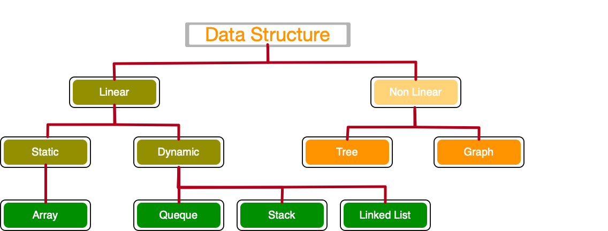
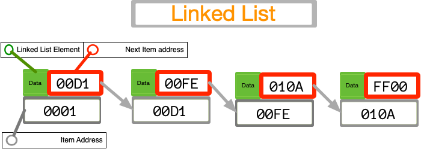
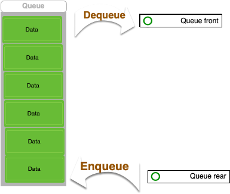
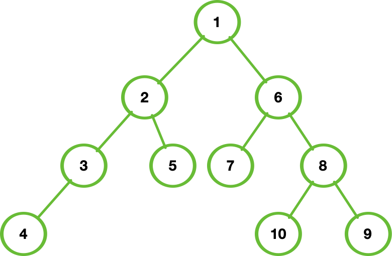
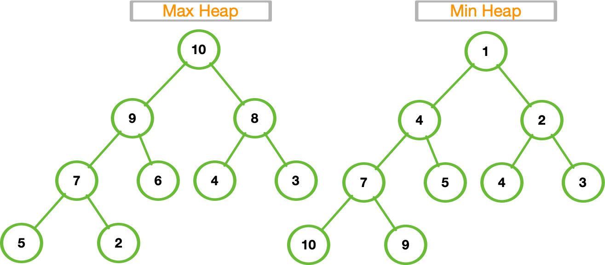
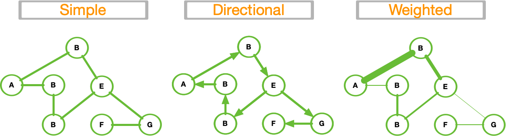
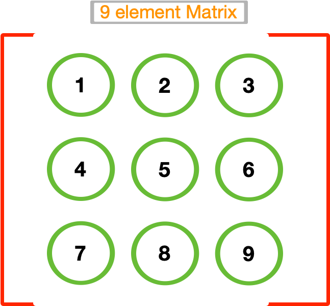

Data Structures

A data structure is a storage that is used to store and organize
data. It is a way of arranging data on a computer so that it can be
accessed and updated efficiently.
Array

An array is a collection of items stored at
contiguous memory locations. The idea is to store multiple
items of the same type together.
Linked Lists

A linked list is a linear data structure, in which the elements are
not stored at contiguous memory locations.
Stack

Stack is a linear data structure that follows a particular order in
which the operations are performed. The order may be LIFO(Last In First
Out) or FILO(First In Last Out).
Queue

A Queue is defined as a linear data structure that is open at both
ends and the operations are performed in First In First Out (FIFO)
order.
Binary Tree

Binary Tree is defined as a tree data structure where each node has
at most 2 children. Since each element in a binary tree can have only 2
children, we typically name them the left and right child.
Binary Search Tree

- The
left subtree of a node contains only nodes with
keys lesser than the node’s key.
- The
right subtree of a node contains only nodes with
keys greater than the node’s key.
- The
left and right subtree each must also be a binary
search tree.
Heap Min and Max

A Heap is a special Tree-based Data Structure in which the tree is a
complete binary tree.
Hash Table

Hashing is a technique or process of mapping keys, and values into
the hash table by using a hash function. It is done for faster access to
elements.
Graph

A Graph is a non-linear data structure consisting of vertices and
edges.
Matrix

A matrix represents a collection of numbers arranged in an order of
rows and columns. It is necessary to enclose the elements of a matrix in
parentheses or brackets.
Example

Traversing Breadth First search
Is an algorithm for traversing a tree data structure for a node. It
starts at the tree root and explores all nodes at the present depth
prior to moving on to the nodes at the next depth level. Extra memory,
usually a queue, is needed to keep track of the child nodes
that were encountered but not yet explored.
BFS example

Traversing Deep First Search
Depth-first search is an algorithm for traversing or searching tree
or graph data structures. The algorithm starts at the root node
(selecting some arbitrary node as the root node in the case of a graph)
and explores as far as possible along each branch before backtracking.
Extra memory, usually a stack, is needed to keep track of
the child nodes that were encountered but not yet explored.
The Maze
Creation using prism algorithm, rapresentation as
graph

The Maze Dictionary
To run the algos we need to fill a dictionary with vertex and
edges

Maze BFS